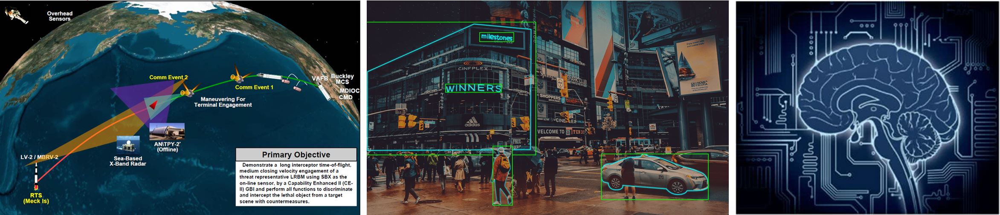
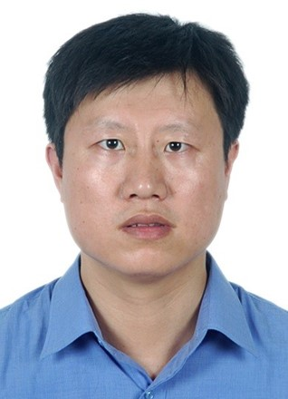
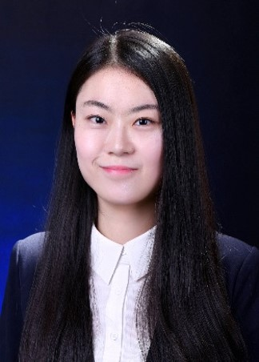
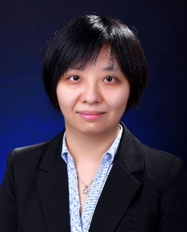
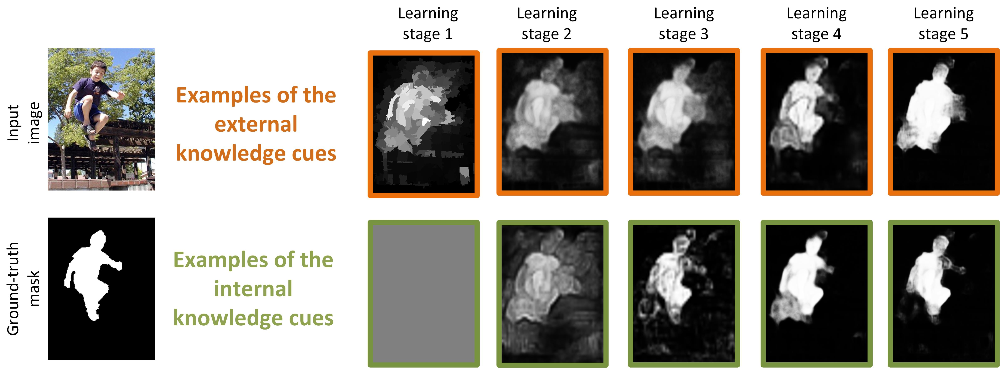
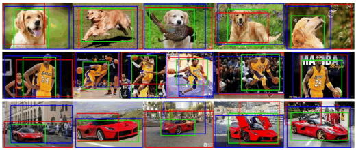
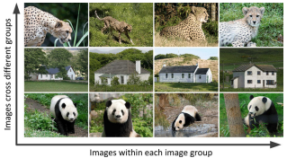
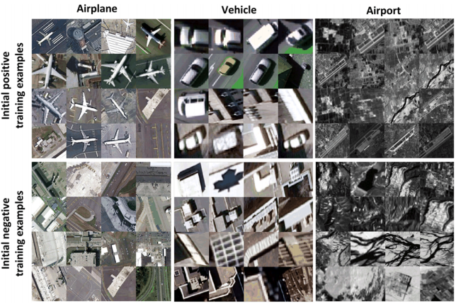

脑与人工智能实验室隶属于“信息融合技术”教育部重点实验室。团队瞄准人工智能国际学术前沿，紧密围绕国家战略需求，在遥感信息智能处理，脑认知与智能计算，视觉智能感知与智能处理等方向开展基础理论研究、关键技术突破与系统集成验证，为人工智能的发展提供新思想、新方法、新技术，是我国人工智能领域高层次人才培养和高水平科学研究的重要基地之一。毕业学生主要就业于百度、阿里、腾讯、商汤科技、海康威视、滴滴等国内高科技公司和国内科研院所。

| 成员 | 介绍 | 成员 | 介绍 |
|---|---|---|---|
|  | 韩军伟教授：实验室主任，IET Fellow。在领域顶级国际期刊或会议如：Proceedings of the IEEE，IEEE TPAMI，CVPR，ICCV，MICCAI等发表学术论文百余篇；论文被引用1.3万余次，同时入选科睿唯安“全球高被引科学家”和爱思唯尔“中国高被引学者”。授权国家发明专利20余项。担任IEEE TNNLS、IEEE TCSVT、IEEE TMM等多个人工智能领域顶级期刊编委，担任领域权威国际会议CVPR、ICPR、ACCV等区域主席。获陕西省科学技术一等奖、教育部自然科学二等奖等多项奖励。 研究方向：人工智能、多媒体信息处理、模式识别、脑成像分析。 | 程塨研究员：入选陕西省青年科技新星和我校翱翔新星，博士生导师。在领域顶刊和顶会如Proceedings of the IEEE、IEEE TPAMI、IEEE TIP、CVPR等发表论文30余篇，10余篇论文入选ESI高被引论文/热点论文，Google 学术引用4700余次。主持10余项省部级以上科研项目。获得2017年教育部自然科学奖二等奖(3/5)和2018年陕西省科学技术奖一等奖(4/8)，获得IEEE GRSL 2017&2018年度最佳审稿人奖以及IEEE JSTARS 2018年度最佳审稿人奖。担任IEEE GRSM、IEEE JMASS、IEEE JSTARS等多个SCI期刊的副编辑/客座编辑。 研究方向：深度学习、计算机视觉、高分辨率遥感图像理解。 | |
| 赵世杰:副研究员，近年来在脑成像分析、人工智能算法等领域发表国际期刊和会议论文30篇，其中：SCI收录15篇，2区及以上12篇，顶级会议论文7篇，获多媒体处理领域顶级会议ICME 2016最佳学生论文提名。主持国家自然科学基金等国家和省部级项目5项，参与自然基金重点项目、国防科技创新特区项目等国家级课题5项。担任Frontier in Neuroscience Review Editor，医学图像计算机青年研讨会(MICS)执行委员；中国图象图形学会视觉认知与计算专委会委员。研究方向：脑成像分析、多媒体处理、人工智能算法。 |  | 夏 辰：工学博士，助理教授。在IEEE-TNNLS，TIP，PR等高水平SCI国际期刊及会议发表论文6篇。获国家青年自然基金一项、博士后基金面上项目一项、陕西省科学自然基金一项。“基于重构的自底向上视觉注意模型研究”的博士论文获得首届中国电子教育学会优秀博士论文提名奖以及2019级西安电子科技大学优秀博士论文。研究方向：视觉注意建模、显著性估计、扫视路径预测及在自闭症识别中的应用、深度学习。 | |
| 姚西文：副研究员，近年来以第一作者/通讯作者在领域顶级国际期刊和国际会议如TPAMI、TIP、TGRS、ACM MM等发表论文25篇，其中ESI高被引和热点论文5篇，Google Scholar引用近1100次。授权国家发明专利9项。主持7项国家级和省部级科研项目，参与3项国家级科研项目。2019年西北工业大学优秀博士论文获得者。目前担任中国图象图形学学会遥感图像专业委员会委员，ISPRS、TGRS等10余种国际期刊审稿人。研究方向：深度学习、计算机视觉、遥感图像处理。 |  | 蔡晓妍:工学博士，副教授，硕士生导师。主持国家自然科学基金面上项目、国家自然科学基金青年基金、教育部人文社会科学基金、陕西省自然基础研究计划等科研项目7项；参与国家242信息安全计划项目、陕西省重点研发项目3项；申请发明专利4项；发表学术论文23篇，其中SCI收录论文16篇。研究方向：自然语言处理、信息检索、图像理解。 |


| 示意图 | 题目 | 链接 |
|---|---|---|
|  | Dingwen Zhang, Junwei Han, Yu Zhang, Dong Xu: Synthesizing Supervision for Learning Deep Saliency Network without Human Annotation. IEEE Transactions on Pattern Analysis and Machine Intelligence (T-PAMI), 2020. Dingwen Zhang, Junwei Han, Yu Zhang: Supervision by Fusion: Towards Unsupervised Learning of Deep Salient Object Detector. IEEE International Conference on Computer Vision (ICCV), 2017. | [PaperLink] |
 |
Dingwen Zhang, Junwei Han, Le Yang, Dong Xu: SPFTN: A Joint Learning Framework for Localizing and Segmenting Objects in Weakly Labeled Videos. IEEE Transactions on Pattern Analysis and Machine Intelligence (T-PAMI), 2020. Dingwen Zhang, Le Yang, Deyu Meng, Dong Xu, Junwei Han: SPFTN: A Self-Paced Fine-Tuning Network for Segmenting Objects in Weakly Labelled Videos. IEEE Conference on Computer Vision and Pattern Recognition (CVPR), 2017. | [PaperLink] |
 |
Dingwen Zhang, Junwei Han, Long Zhao, Duyu Meng: Leveraging Prior-Knowledge for Weakly Supervised Object Detection Under a Collaborative Self-Paced Curriculum Learning Framework. International Journal of Computer Vision, (IJCV), 2019. Dingwen Zhang, Deyu Meng, Long Zhao, Junwei Han: Bridging Saliency Detection to Weakly Supervised Object Detection Based on Self-paced Curriculum Learning. International Joint Conference on Artificial Intelligence (IJCAI ), 2016. | [PaperLink][Models] |
|  | Dingwen Zhang, Deyu Meng, Junwei Han: Co-Saliency Detection via a Self-Paced Multiple-Instance Learning Framework. IEEE Transactions on Pattern Analysis and Machine Intelligence (T-PAMI), 2017. Dingwen Zhang, Deyu Meng, Chao Li, Lu Jiang, Qian Zhao, Junwei Han: A Self-Paced Multiple-Instance Learning Framework for Co-Saliency Detection. IEEE International Conference on Computer Vision (ICCV), 2015. | [Dataset] [Results] [Evaluation Metrics] |
|  | Dingwen Zhang, Junwei Han, Chao Li, Jingdong Wang, Xuelong Li: Detection of Co-salient Objects by Looking Deep and Wide. International Journal of Computer Vision ( IJCV), 2016. Dingwen Zhang, Junwei Han, Chao Li, Jingdong Wang: Co-saliency Detection via Looking Deep and Wide. IEEE Conference on Computer Vision and Pattern Recognition (CVPR), 2015. | [Dataset] [Results] |
|  | Junwei Han, Dingwen Zhang, Gong Cheng, Lei Guo, Jinchang Ren: Object Detection in Optical Remote Sensing Images Based on Weakly Supervised Learning and High-Level Feature Learning. IEEE Transactions on Geoscience and Remote Sensing (T-GRS ), 2015. Dingwen Zhang, Junwei Han, Gong Cheng, Zhenbao Liu, Shuhui Bu, Lei Guo: Weakly Supervised Learning for Target Detection in Remote Sensing Images. IEEE Geoscience and Remote Sensing Letters (GRSL), 2015. | [Dataset] |